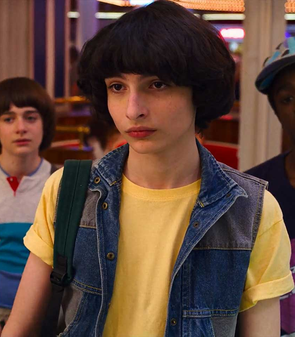
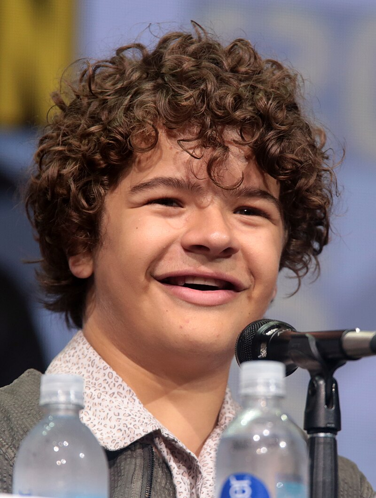
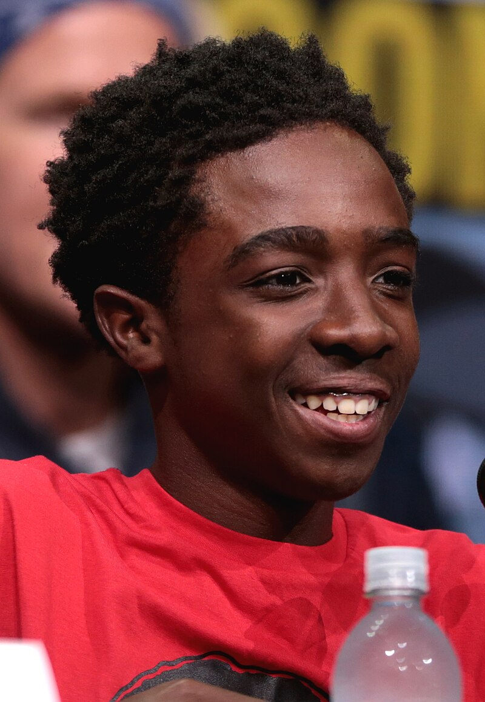
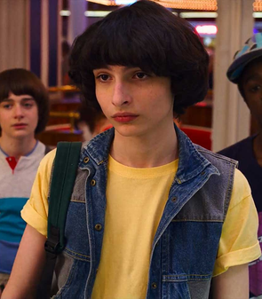
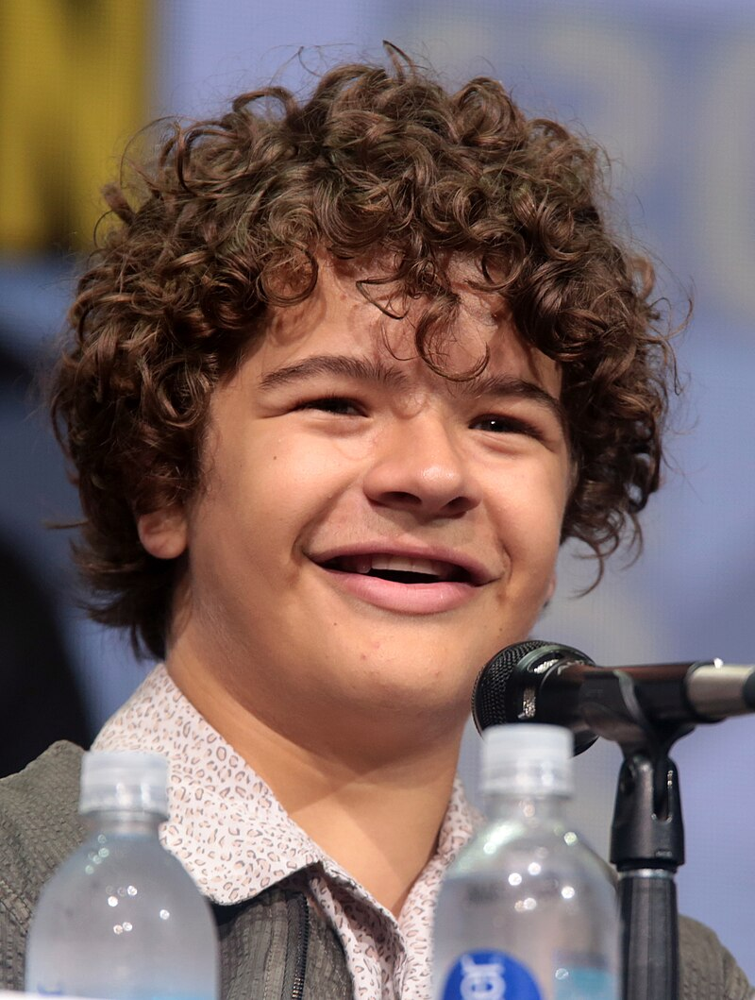
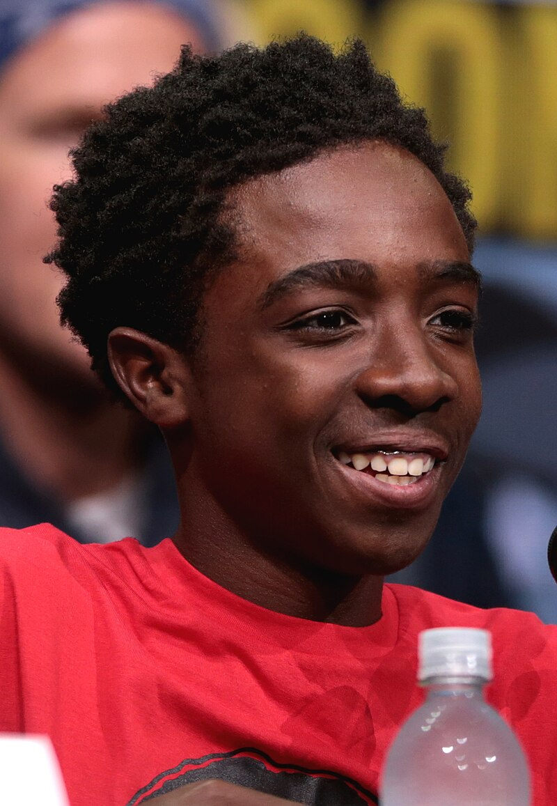
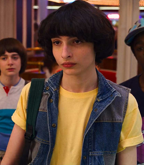
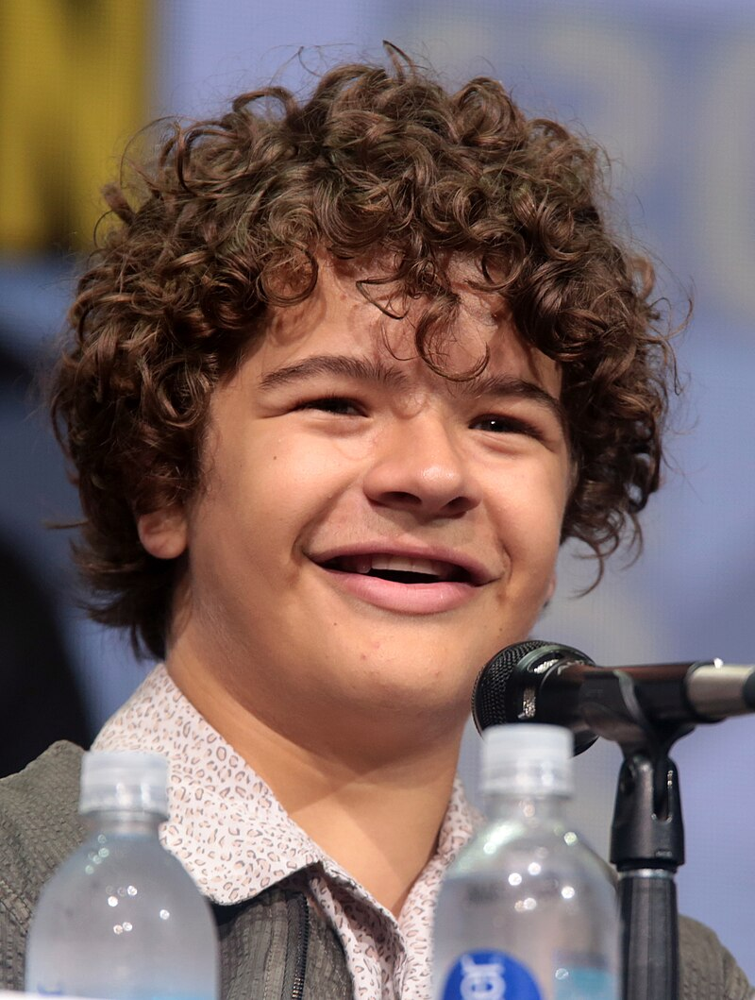
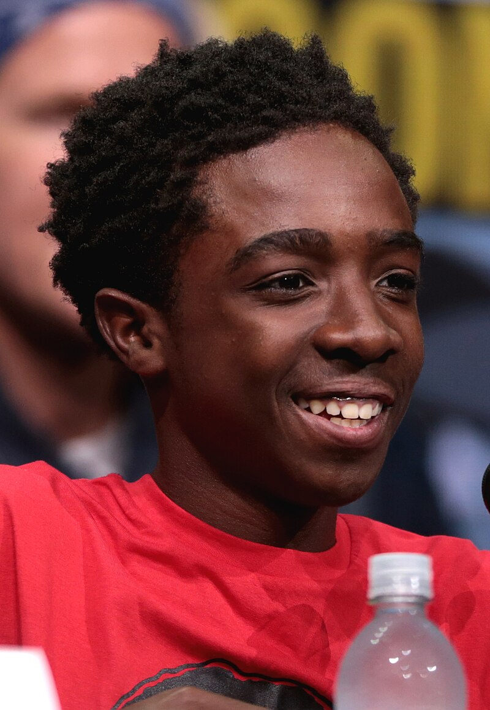

Stranger Things is a thrilling sci-fi horror series set in the 1980s, where a group of kids in Hawkins, Indiana, uncover secret government experiments and a terrifying parallel dimension called the Upside Down. As they face supernatural forces and mysterious disappearances, they team up with their telekinetic friend, Eleven, to fight the lurking dangers.



| season | Title | Air date |
| season1 | The Beginning (Mystery & Horror) | 2016-07-15 |
| season2 | The Aftermath (Shadow Monster & Mind Flayer) | 2017-10-27 |
| season3 | The Battle of Starcourt (Mall & Body-Snatching Horror) | 2019-07-04 |
| season4 | The Rise of Vecna (Darkest Season Yet) | 2022-05-27 |
Nancy Wheeler in Stranger Things is a brave and determined journalist who uncovers mysteries and fights against supernatural supernatural threats.
Joyce Byers in Stranger Things is a fiercely protective mother who stops at nothing to save her son and uncover the truth about the Upside Down.
Jim Hopper in Stranger Things is the tough yet caring chief of police who protects Hawkins from supernatural threats while battling his own past.
Jonathan Byers in Stranger Things is a quiet and talented photographer who supports his family and helps uncover the mysteries mysteries of Hawkins.